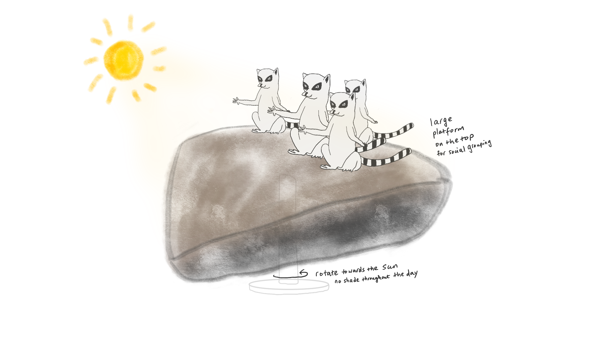

Week 4
Animal Enrichment Project
Big Idea:
To create enrichment proposals for one animal, promoting their natural behaviors and improving animal welfare in a zoo setting.
Animal: Ring-tailed Lemur
Fast facts about lemurs & cautions:
"Lemurs are a type of prosimian, which means they are primates that evolved before monkeys and apes. They are more primitive than their cousins but share certain characteristics. Found in only one area on Earth—Madagascar and the nearby Comoro Islands—lemurs are considered the world’s most endangered group of mammals."
* Lemurs are very sensitive to scents, so it’s better not to irritate them with smell sensory implements.
* They are extremely intelligent and active, so physical challenges should be a huge issue.
* They can get aggressive when they are bored.
* Ring-tailed lemurs exhibit female philopatry and the core of the social group is the dominant matriline
* Lemurs use vocalization and visual signals for communication.
* They mark their territories using their tails through rubbing the scent gland on their wrist. Males have “stink fights”.
Propsal 1:
Keywords: feeding, food-exploration
Lemur feeds on fruit and plant, which they usually find on trees. Aye-aye, in particular, can use their skinny middle finger to tap on the branch and take the insects out for food. The current enrichment San Diego zoo provides is using hollow, skinny bamboos, wood sticks to store food, so aye-aye can tap on them to extract their food. However, ring-tailed lemurs spend most of their time on the ground, so they’d also eat earth, dirt, insects and spider web as well. if the food source can be found from the ground with a bit of adjustable challenge, it can bring ring-tailed lemurs some fun while doing the probing and digging.
Idea: Place a shallow flat wooden box with the top uncovered either lower than the ground or on the ground level. The four edges of the wooden box are nailed with pegs that are tightly aligned with different interval distances. Then a sturdy rope or elastic string is to used to weave back and forth in both horizontal and vertical directions, so an irregular grid is created covering the top of the box. The gap in the grid should be smaller or roughly similar size as a lemur’s finger. The nuts and fruit will be placed underneath the grid and in the box. The food will be visible from the ground level, and lemur will use their hand/fingers to dig and nudge in the grid in order to get the food.
Propsal 2:
Keywords: jumping, activities, balancing
Lemurs depend a lot on their legs and feet. They are amazing climbers as they can hop back and forth on trees and branches. Female mothers can even jump with their babies hang in the front Their tails keep them balanced, and their big thumb provides them the main grip to hold onto the subject. Lemurs get aggressive and agitated when they get bored. Since they do a lot of jumping back and forth between trees, branches, and whatever platforms the zoo is providing, it’d be interesting to set up something that could be adjustable for a balance challenge for entertainment.
Idea: a tree-like stick/wooden cylinder will be hanging from the top. There’s a curved bowl that’s installed somewhere in between the tip and the end of the cylinder. In the bowls, there will be nuts, leaves or fruit as rewards to the lemurs. Since the bowl is curved upward, lemurs can’t reach the food from the bottom(jumping from the ground). They are invited to hop on to the stick and then descend down to the bowl in order to get the reward. The bowl can be adjusted its height placement, so lemurs can’t just simply jump from the same spot every single time. Meanwhile, the hanging cylinder will swing a bit as the lemur jumps on it, so it will create some challenge for them to balance and eventually get the reward as well.
Propsal 3:
Keywords: Sun-bathing, social behavior, group behavior
Ring-tailed lemurs spend a lot of time on the ground. Apparently, they like to warm themselves up by bathing in the sun. It’s also called “Sun-worshipping”. They’d sit in a lotus position with two legs extended outward, facing their front to the direction of the sun. Sunbathing usually happens in the morning or during the day when lemurs want to be warm. Such activity is usually a group social activity(versus at night they’d cuddle together) as they like to sunbath together.
Idea:
a rotatory sun-bathing platform that makes sure the top platform where many lemurs can sit together is always facing the sun. The platform will be slightly tilted, and the top’s bigger surface enabled more lemurs to sit together.

Lemur Experts
Dr. Patricia C. Wright
* Duke Lemur Center
* Stoney Brook Univeristy
* patchapplewright @gmail.com
Dr. Michelle Sauther
* University of Colorado Boulder
* michelle.sauther@colorado.edu
Frank Cuozzo:
* University of Colorado Boulder
References
https://www.folly-farm.co.uk/zoo/meet-the-zoo-animals/ring-tailed-lemur/
https://animals.sandiegozoo.org/animals/lemur
https://kids.sandiegozoo.org/videos/ring-tailed-lemurs
https://www.youtube.com/watch?v=UjSiq53nJBo
https://www.youtube.com/watch?v=5c116fcBzFI
http://pin.primate.wisc.edu/factsheets/entry/ring-tailed_lemur/behav